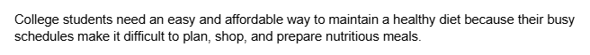
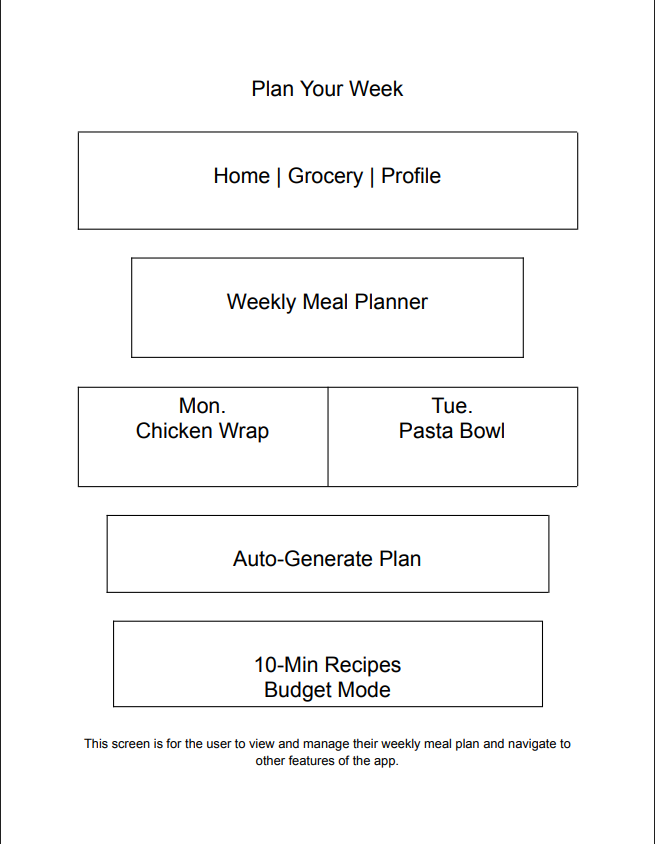

Andrew Tran
About me
My mission is to keep learning and growing in computer science while building tools that actually solve problems people face. I want to work on projects that matter, push myself to improve every day, and be known as someone who gets things done and can be counted on.
Skills
- Java, C++, Python
- HTML & CSS
- Git & GitHub
- Object-Oriented Programming
- Debugging & Problem-Solving
Highlighted projects
Problem Statement

College students need an easy and affordable way to maintain a healthy diet because their busy schedules make it difficult to plan, shop, and prepare nutritious meals.
Affinity Diagram

This Affinity Diagram groups twenty brainstorming ideas into five clusters: Core Features, User Experience, Hurdles, Technology, and Engagement. It helps define the project scope and prioritize what features college students need most to maintain a healthy diet despite their busy schedules.
Sketches

These sketches illustrate how the users plan their week, customize their meals, and shop smarter with a generated grocery list.
CSCE 240 Code Repository
This repository contains my C++ source files from CSCE 240, including `.cc` and `.h` code samples.